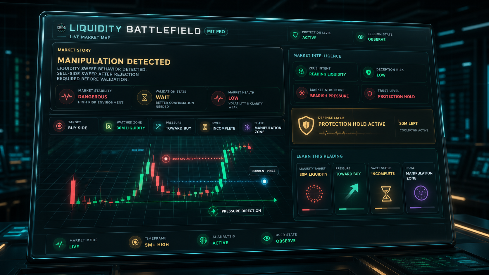
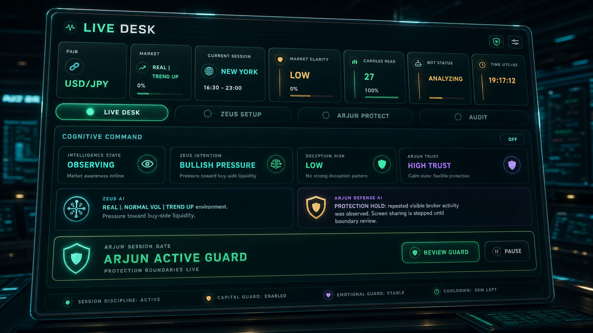
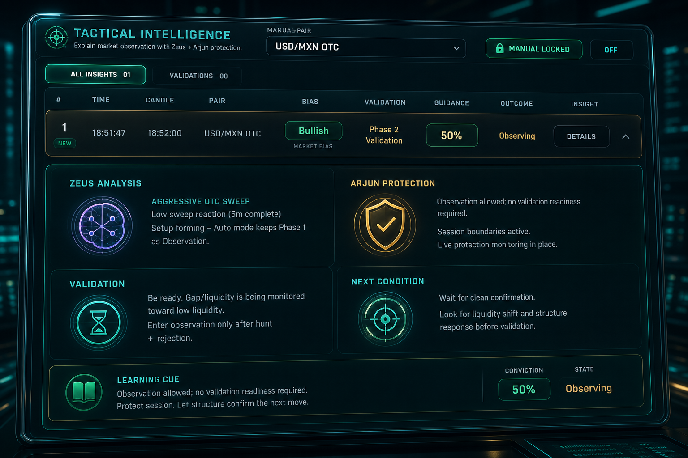

Market state and live context enter the terminal.
MIT PRO Command Center
Understand The Market Before You Approach It
Intelligence • Protection • Discipline
Desktop Intelligence Terminal
MIT Pro combines Zeus Intelligence and Arjun Defense to help users understand market conditions with better awareness, discipline, and control.
Zeus Analysis
Arjun Protection
Apex Core Running
Decision Support Only
No Guaranteed Results
MIT PRO CORE REACTOR
COMMAND CENTER
Zeus Analysis
MIT PRO Decision Support
Arjun Protection
System Architecture
How MIT Pro Works
From live conditions to decision support, MIT Pro turns market context into readable intelligence before any human decision.
Zeus reads structure, pressure, liquidity, and momentum.
Behavior patterns are reviewed for clarity and risk.
Confidence checks help separate clear context from uncertainty.
Arjun watches discipline, session health, and protection rules.
The user stays in control and reviews the available intelligence.
MIT Pro supports awareness and understanding without promising outcomes.
MIT PRO Features
Powerful Intelligence. Human-Centered Protection.
MIT Pro is designed to help users better understand market behavior through adaptive intelligence, risk awareness, educational insights, and human-layer protection.
Zeus Intelligence
Zeus Intelligence Core
Intelligence Active Neural Activity ActiveAnalyzes market behavior, structure, momentum, volatility, liquidity, and confidence conditions in real time.
Arjun Defense
Arjun Protection System
Protection Active Protection Integrity 100%Promotes discipline, awareness, session health, cooldown protection, and responsible decision-making.
- Adaptive market analysis
- Market state recognition
- Confidence evaluation
- Behavioral pattern recognition
- Volatility assessment
- Liquidity monitoring
- Risk awareness monitoring
- Discipline protection
- Emotional decision detection
- Session health monitoring
- Cooldown protection
- Behavioral alerts
- Live market status
- Market stability indicator
- Confidence dashboard
- Risk assessment overview
- Session intelligence feed
- Adaptive intelligence updates
- Liquidity zone identification
- Market pressure monitoring
- Structure awareness
- Market balance analysis
- Dynamic liquidity mapping
- Stable environment
- Expansion phase
- Consolidation phase
- Transitional phase
- Volatile conditions
- Uncertain environment
- Improved transparency
- Additional context
- Enhanced awareness
- Better decision support
- Confidence-based validation
- Dynamic condition recognition
- Behavioral adaptation
- Context-aware analysis
- Continuous intelligence evolution
- Contextual insights
- Market behavior explanations
- Risk awareness guidance
- Learning-oriented intelligence
- Decision context support
- Secure user authentication
- License protection system
- Account security controls
- Privacy-focused design
- Secure platform access
Why MIT PRO
Adaptive intelligence
Human-centered protection
Real-time market awareness
Educational insights
Confidence-based validation
Discipline-focused design
Continuous innovation
Security and reliability
Liquidity Battlefield
Liquidity Battlefield Engine
A real product-inspired view of how MIT PRO explains zones, pressure, volatility, and session context inside the terminal.

Live Desk Preview
MIT PRO Live Desk Preview
The operating cockpit where Zeus readings, Arjun protection, timing awareness, and session discipline stay visible together.


Command Access Levels
Guardian, Commander, Supreme
Access levels stay consistent from the command-center entrance to the license activation chamber.
Guardian Access
$29/moFor learning, awareness, and basic protection.
- REAL mode
- Core strategies
- Basic guard
Commander Access
$59/moComplete MIT Pro experience for active users.
- Advanced tools
- Timing sync
- Full discipline guard
Supreme Access
$99/moFull command center access and advanced coverage.
- Advanced OTC suite
- Full battlefield
- Future priority access
License Activation
License Activation Chamber
Users move from the command center into a focused license request flow with manual USDT verification, admin review, and support visibility.
MIT PRO Mission
Knowledge Before Action. Protection Before Emotion.
At MIT PRO, Market Intelligence Terminal, our mission is to help individuals make smarter, calmer, and more informed decisions by transforming complex market behavior into understandable intelligence.

MIT PRO was created to become a layer of protection, education, and awareness in a world where many people are influenced by noise, misinformation, emotional reactions, unrealistic promises, and manipulation.
We believe that knowledge should come before action, discipline should come before emotion, and understanding should come before decision-making.
MIT PRO is not built to encourage impulsive behavior. It is built to help users understand what is happening, why it is happening, and when caution may be more important than action.
We promise to continuously build technology that helps users learn more, understand more, protect more, think better, and decide smarter.
UnderstandMarket behavior translated into clear intelligence.
Recognize RiskConditions, pressure, and uncertainty shown before action.
Stay DisciplinedA focused workspace designed for calmer decisions.
Every day, individuals navigate uncertainty, information overload, and rapidly changing conditions. MIT Pro exists to promote awareness, discipline, and informed decision-making through intelligence and protection.
The first responsibility of intelligence is protection. Before looking for opportunities, users should understand risk, instability, uncertainty, and changing conditions.
Long-term improvement comes from learning and understanding, not emotional reaction or short-term excitement. Every interaction should increase awareness.
Technology should support human judgment, not replace it. MIT PRO combines adaptive intelligence systems with human validation so users remain in control.
Users deserve clarity. MIT PRO explains conditions, confidence levels, risks, and reasoning in a way that promotes understanding rather than blind reliance.
Markets, technology, and user behavior evolve. MIT PRO is committed to improving intelligence, protection mechanisms, education, and user experience.
Our Vision
To become the world's most trusted Market Intelligence Terminal, empowering individuals through education, awareness, adaptive intelligence, and human-centered protection.
"Knowledge Before Action. Protection Before Emotion. Understanding Before Every Decision."
Commitment
User Awareness First
Discipline Before Action
Protection Before Exposure
Intelligence Before Decision
No Guaranteed Results
Decision Support Only